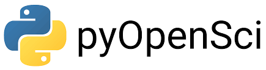
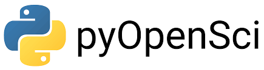

From research software engineering to data science: how technology will impact the way we research
Slide’s link:
https://www.flor14.github.io/wsu-dandrea/slides.html
Title slide illustration: The Turing Way Community, & Scriberia. (2020, March 3). Illustrations from the Turing Way book dashes. Zenodo. http://doi.org/10.5281/zenodo.3695300

This work is licensed under a Creative Commons Attribution 4.0 International License.
Reproducibility crisis

Code unavailable is one of the reasons why researchers can’t reproduce their articles
What does it means that the article is reproducible?

Challenge to scientists: does your ten-year-old code still run?

‘Missing documentation and obsolete environments force participants in the Ten Years Reproducibility Challenge to get creative.’
–
Research Compendium
Organize files according to a prevailing convention.
Provide separation between data, methods and results expressing unambiguously the relationship between the three.
Specify the environment (+ reproducibility).

High reproducibility doesn’t mean that things couldn’t fail
What happens when the technology fails?

Software mantainance
- Should we provide more than one option?
- Should our code have maintainers?

Hackathon
Authors
Send their papers with publicly available associated code and data
Participants
Attempt to reproduce published research of their choice from a list of proposed papers
At the end, the participants give feedback to the authors

ROpenSci / pyOpenSci
Scientific package review process
standarization of practices
visibility.
 

US Research software engineer association
First conference October 16-18th, 2023, Chicago, IL

What is a Research software engineer?

What is the highest level of education you have attained? (one choice list)
 :::footer
:::footer
:::
 :::footer The turing way / he Turing Way project illustration by Scriberia. Used under a CC-BY 4.0 licence. DOI: 10.5281/zenodo.3332807. :::
:::footer The turing way / he Turing Way project illustration by Scriberia. Used under a CC-BY 4.0 licence. DOI: 10.5281/zenodo.3332807. :::
Journal of Open Source Software

Master of Data Science program - UBC
10 month program - final capstone project with industry partners


The scientific community should learn about reproducible practices
Track a complete history of your research and ensure the continuity of your work
Facilitate collaboration and review
Publish validated research

The scientific community should learn about reproducible practices
Write your papers efficiently
Get credit for your work fairly
¿Are we experiencing a cultural change?

Thank you!
Dr. Florencia D’Andrea
Postdoc - Master of Data Science Program - UBC